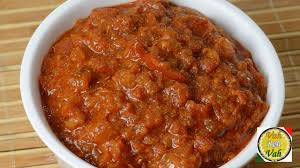

Sweat Potato Steaks
Meet the players in todays’ recipe!
- Slabs of sweet potato roasted with a simple spice mix until golden on the surface and tender inside.
- The garlic-sesame-chilli topping.
- The Whipped Tahini Yogurt (well, it’s just whisked, but “whipped” sounds better 😂
- Crunchy toasted flatbread for dunking! (Optional)

Pav Bhaji
Meet the players in todays’ recipe!
Cook vegetables
-
Rinse, peel and chop the veggies. You will need 1 cup chopped cauliflower, 1 cup chopped carrot, 3 medium sized potatoes (chopped) and ⅓ cup chopped french beans.
Note: You can also add veggies that you like, but do not add okra, eggplants, pumpkin, radish, corn, yam or green leafy vegetables.
Cabbage, broccoli, zucchini, pumpkin are some unique options that you can consider to add, but the traditional version does not include these veggies.
- The garlic-sesame-chilli topping.
- The Whipped Tahini Yogurt (well, it’s just whisked, but “whipped” sounds better 😂
- Crunchy toasted flatbread for dunking! (Optional)
- Add all the above chopped veggies in a 3 litre stovetop pressure cooker. Also add 1 cup green peas (fresh or frozen).
I have cooked the veggies in a pressure cooker. You can boil or steam them using a pan or in the Instant pot adding water as needed.
- Add 2.25 to 2.5 cups water.
- Pressure cook the veggies for 5 to 6 whistles or for about 12 minutes on medium heat.
Make onion tomato masala

- Heat a frying pan or kadai (wok). You can also use a large tawa or a skillet. Add 2 to 3 tablespoons butter. You can use amul butter or any brand of butter. The butter can be salted or unsalSted.
- As soon as the buter melts, add 1 teaspoon cumin seeds.
- Mix onions with the butter and sauté on a low to medium heat.
- Then begin to sauté tomatoes on a low to medium heat.